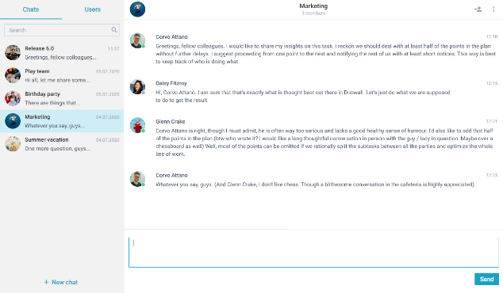
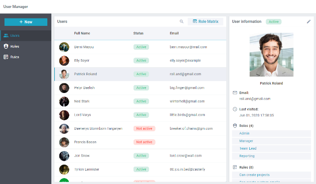
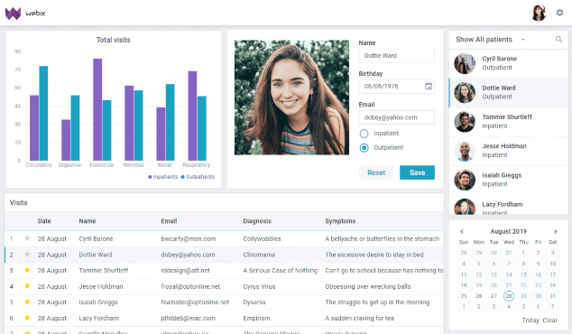
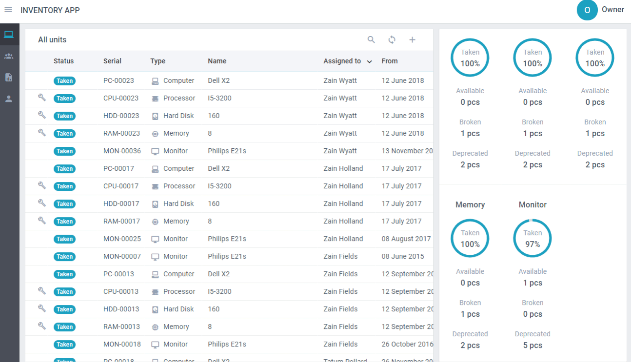

Webix
Características
Webix es una biblioteca empresarial de JavaScript para el desarrollo de aplicaciones multiplataforma con widgets JavaScript HTML5, controles de interfaz de usuario y máscaras. Su biblioteca contiene más de 99 widgets de interfaz de usuario y controles de JavaScript CSS/HTML5 repletos de funciones. También ofrece un gran número de máscaras adaptables para acelerar el desarrollo web.
- 
El widget de chat es la aplicación web de JavaScript para intercambiar mensajes directos entre usuarios dentro de la aplicación. JavaScript Chat permite organizar salas de chat con varios usuarios con la oportunidad de administrar la lista de contactos y el aspecto del chat en sí. solicitud.
- 
User Manager es la solución lista para usar para administrar la lista de usuarios y para administrar los derechos y permisos de acceso. Hemos previsto numerosas configuraciones, registro de actividad, auditoría de seguridad y diversas formas de auto-identificación y autorización de los usuarios.
- 
Aplicación de citas médicas Esta demostración de la aplicación JavaScript facilita la programación de citas y funciona como parte de un portal médico. La aplicación permite al personal de las instituciones médicas gestionar las citas médicas sin esfuerzo. Los profesionales sanitarios disponen de información sobre sus pacientes. Los médicos pueden ver los diagnósticos, la fecha y hora de la cita, los detalles de contacto del cliente, etc. Los pacientes pueden programar una visita, obtener más información sobre su médico y el centro médico en sí.
- 
Aplicación de inventario La aplicación de inventario facilita el servicio de equipos informáticos. Una interfaz de usuario conveniente y atractiva permite a los administradores del sistema hacer frente a un número considerable de dispositivos electrónicos y sus componentes. El personal técnico puede monitorear sin esfuerzo el estado de las computadoras y encargarse del mantenimiento programado. Los informes de estadísticas ayudan a definir el estado general de los equipos de toda la empresa.